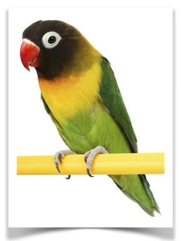

Kontes Burung Nusantara .

Even kontes burung berkicau Nusantara Community 2nd Anniversary Magetan 2018, tuntas digelar di gantangan permanen terminal lama, Jl. Mayjen Sungkono, Magetan, Minggu (25/3/2018). Bias BC asal yang merupakan BC setempat, sukses meraih gelar juara umum dengan total poin 1750.
LOve birds.
Lovebird terkenal karena warna dan suara ngekek-nya yang khas. Di pasar, burung ini bisa didapatkan mulai harga puluhan ribu hingga di atas Rp 1 miliar, tergantung jenis dan kualitasnya.